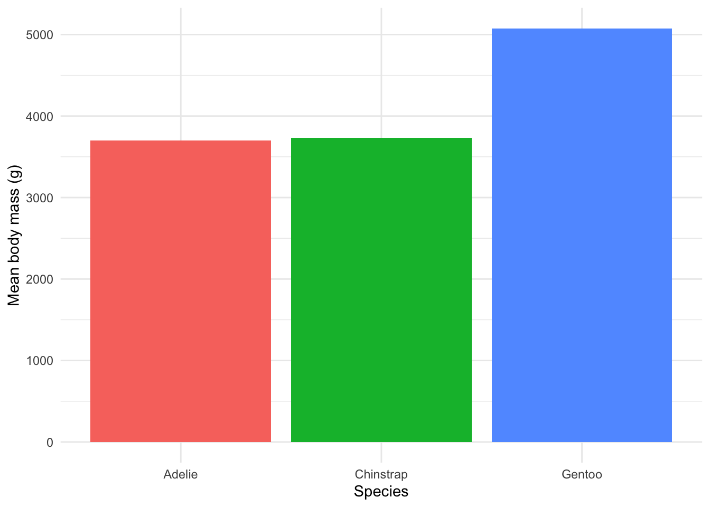

library(reticulate)
venv_python <- file.path(Sys.getenv("QUARTO_PROJECT_DIR", "."), ".venv", "bin", "python")
if (file.exists(venv_python)) use_python(venv_python, required = TRUE)
py_config()$version[1] '3.14'September 23, 2026
R and Python are often treated as rivals, but they can share one document. Here I use each for the part it does comfortably: R to load and tidy the Palmer Penguins data, Python (pandas) to summarise it, and R again to plot the result. The reticulate package hands the objects back and forth.
Data: Palmer Penguins, Palmer Station Antarctica LTER (CC0 licence). Loaded from the palmerpenguins R package.
reticulate needs to know which Python to use. I point it at the uv environment in .venv, so the post uses the same packages as the Python post.
In a Python chunk, the R object is available as r.penguins_clean, and reticulate has already converted it to a pandas DataFrame.
<class 'pandas.DataFrame'> species n mean_mass_g mean_flipper_mm
0 Adelie 151 3700.7 190.0
1 Chinstrap 68 3733.1 195.8
2 Gentoo 123 5076.0 217.2Back in R, the Python object is py$summary, which arrives as an ordinary data frame.

Figure 1 crosses the language boundary twice: the data went from R to Python, and the summary came back to R for plotting. Gentoo are again the heaviest species by a wide margin.
Warning: NAs introduced by coercion[1] NAThat warning is expected. It is a reminder that values passed between the languages keep their types, so a text column will not quietly become a number.